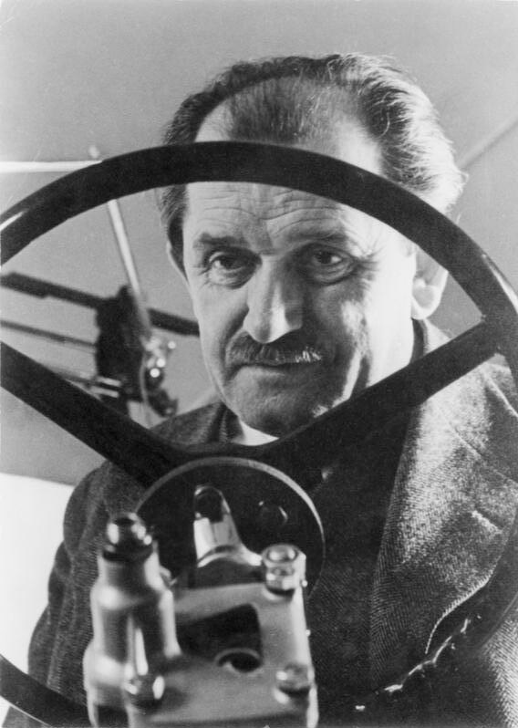

JGYPK - PIA Webes alkalmazások fejlesztése - Komplex weboldal
A VW Bogár története az 1930-as évekre nyúlik vissza, amikor Németország nemzetiszocialista vezetése széles néprétegek számára elérhető népautó gyártását tűzte ki célul. Az autó fejlesztésében jelentős szerepet játszott Ferdinand Porsche, akit a Bogár megteremtőjeként tartanak számon, tévesen. A Bogár fejlesztése azonban korábbra nyúlik vissza. Barényi Béla már 1925-ben készített részletes terveket, amit azonban a Porsche család hosszú időn keresztül vitatott, mivel ők Ferdinand Porschét tartották az autó konstruktőrének. Barényi csak az 1953-as bírósági ítélet után tudta szerzőségi jogait és ezzel igényeit érvényesíteni. Vitatott és nem véglegesen tisztázott Ganz József szerepe az "Ős Bogár" fejlesztésében. A Ganz első prototípusát a nürnbergi Ardie gyár építette 1930-ban.
Az autó szériagyártását a háború előtt már nem tudták elkezdeni, mivel az 1938 májusában alapított wolfsburgi Volkswagen üzem még nem készült el. A második világháború alatt a gyárban kizárólag katonai járműveket és egyéb katonai felszerelést gyártottak. Az akkor Volkswagennek nevezett autó sorozatgyártását csak 1945 nyarán tudták elkezdeni. 1945 végéig 1 785 darab autó készült el, melyeket a megszálló erők illetve a német posta kapott meg. 1946-tól a VW-t 5 000 márkás áron magánszemélyek is megvásárolhatták.
Nem sokkal később megkezdődött VW exportálása az USA-ba, és a világ sok más országába. Ennek illetve a "német gazdasági csodának" köszönhetően, amelynek a Volkswagen szimbóluma lett, a "bogártermelés" Wolfsburgban és számos más gyártó- és összeszerelő üzemben szerte a világban korábban elképzelhetetlen szintre emelkedett. Az USA-ban – a német piac után a legfontosabb VW piacon – nagy népszerűségre tett szert a Bogár az 1960-as években, mint olcsó, az ottani fogalmak szerint takarékos autó, illetve mint az „ellenkultúra” megtestesítője szerepelt.
A gyártásban nagy mérföldkőhöz értek 1972. február 17-én, mert ekkor a Volkswagen Bogár eladott darabszámban megelőzte a Ford T-modellt.[2] Az 1970-es évek elején az eladások csökkentek, mivel a Bogár számára egyre növekvő konkurenciát jelentettek a lényegesen korszerűbb kisautók. 1974-ben kezdődött meg az utódmodell, a VW Golf gyártása Wolfsburgban és 1978-ban befejezték a bogár németországi gyártását. Ezután már csak Mexikóban és Brazíliában gyártották. Németországban még 1985-ig tartotta kínálatban a VW a Bogarat.
Összesen 21 529 464 VW Bogarat gyártottak, amiből 15,8 millió darabot (ebből körülbelül 330 000 kabriót) gyártottak Németországban.
Az utolsó, 3VWS1A1B54M905162-es alvázszámú Bogár 2003. július 30-án készült el.

JGYPK - PIA Webes alkalmazások fejlesztése - Komplex weboldal